Home
Menu
Outlet
Topokki
Rice cake dengan tekstur yang lembut, dibalur saus pedas dan creamy, resep asli dari Korea
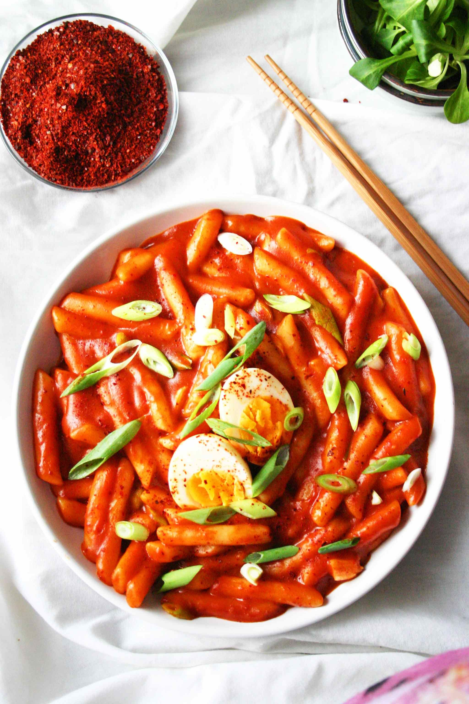
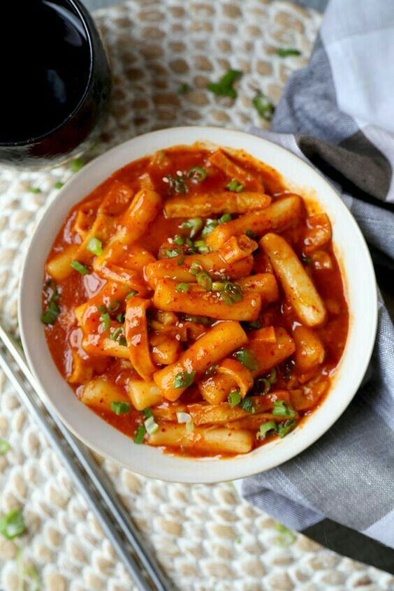
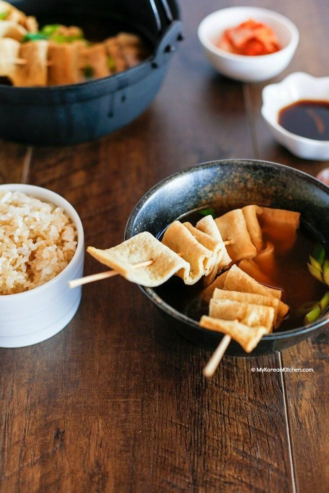
Oden
Otak-otak ikan khas Korea
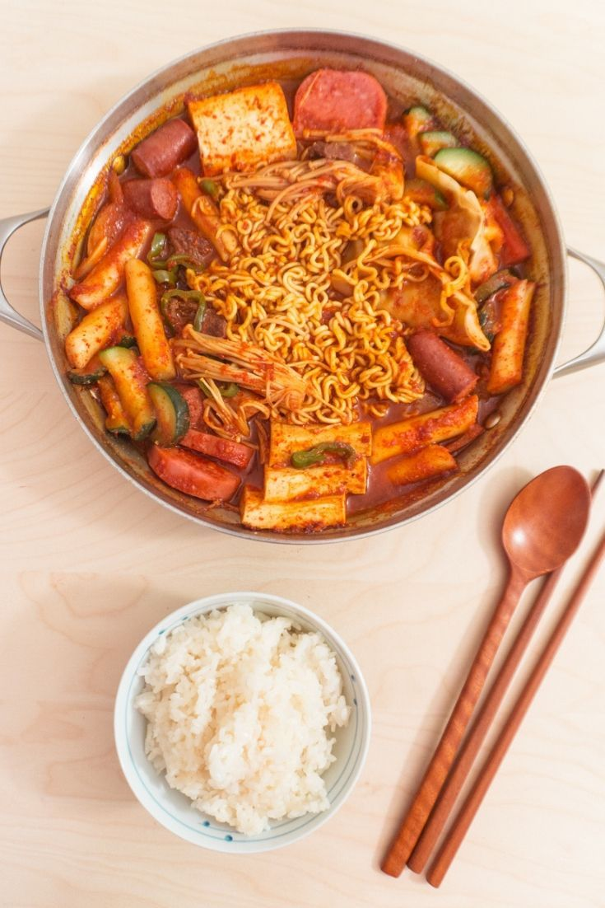
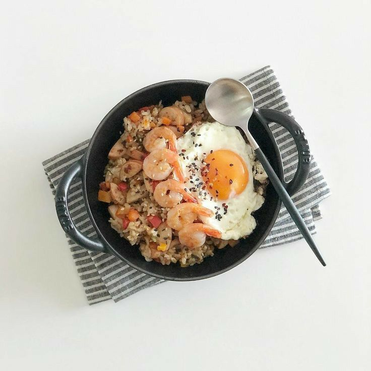
K-Chicken Set
Paket K-Chicken dengan nasi, japchae (soun Korea dengan sayuran dan potongan daging), dan kimchi
Korean BBQ
Gurihnya BBQ yang disajikan dan dimasak menggunakan bangjja, alat tradisional Korea yang terbuat dari kuningan dan tembaga
 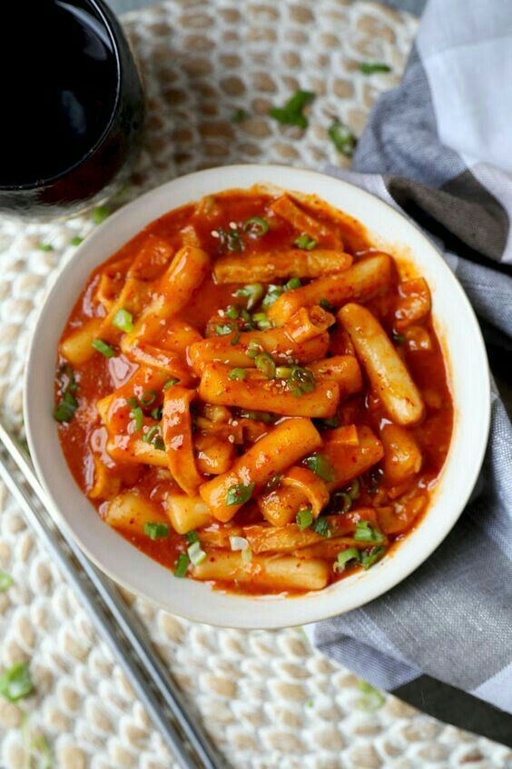
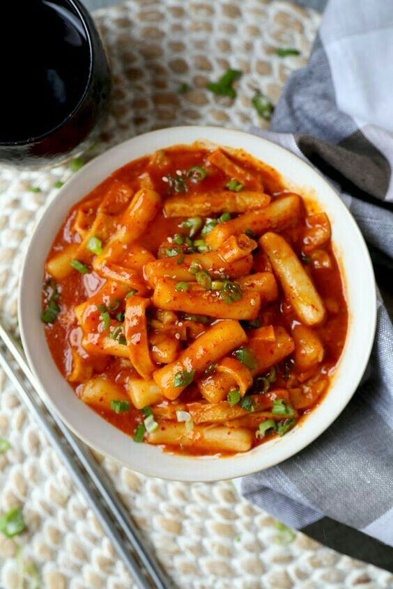
 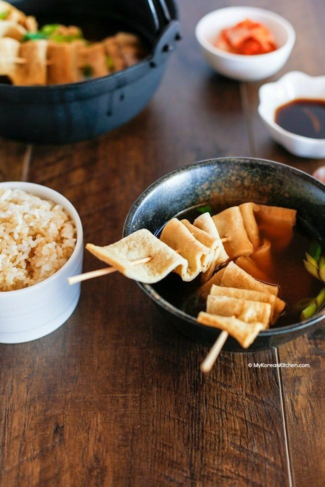
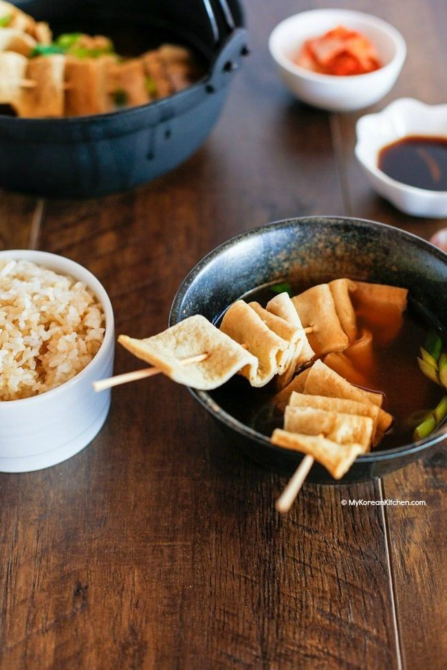

 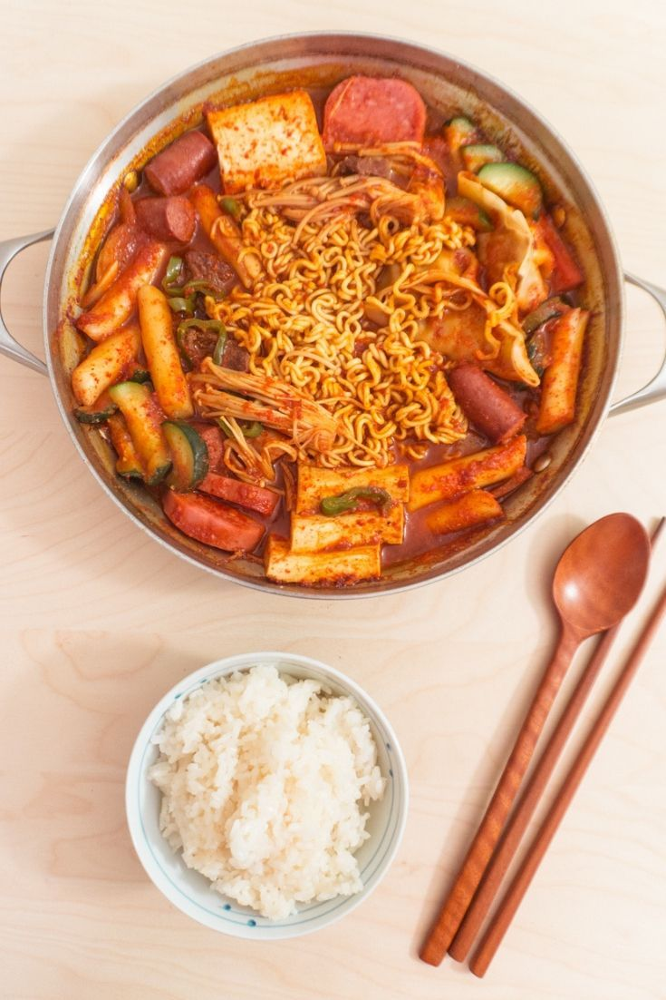
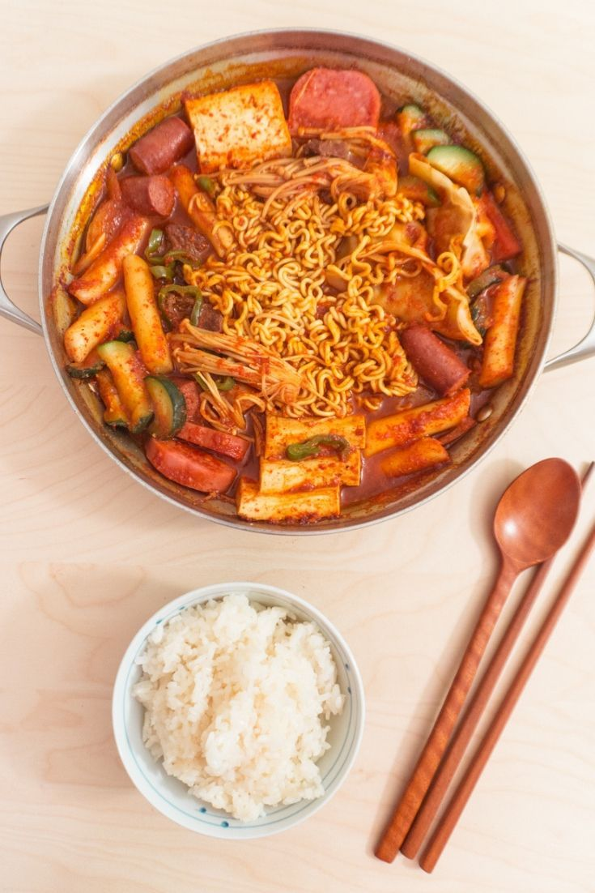
 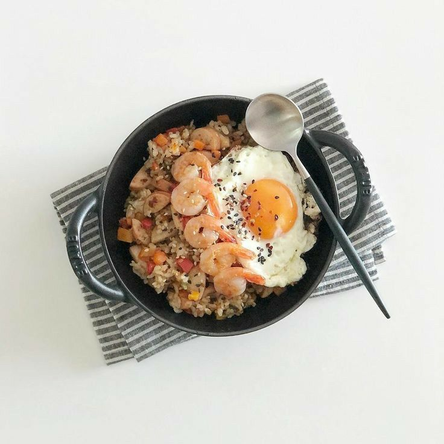
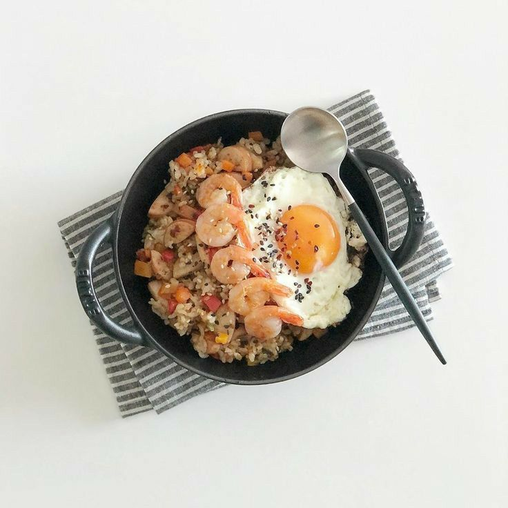